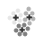
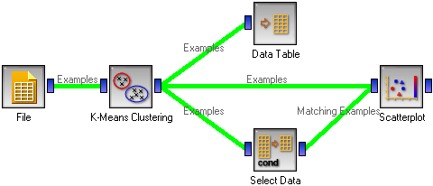
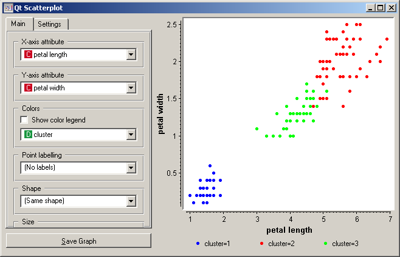
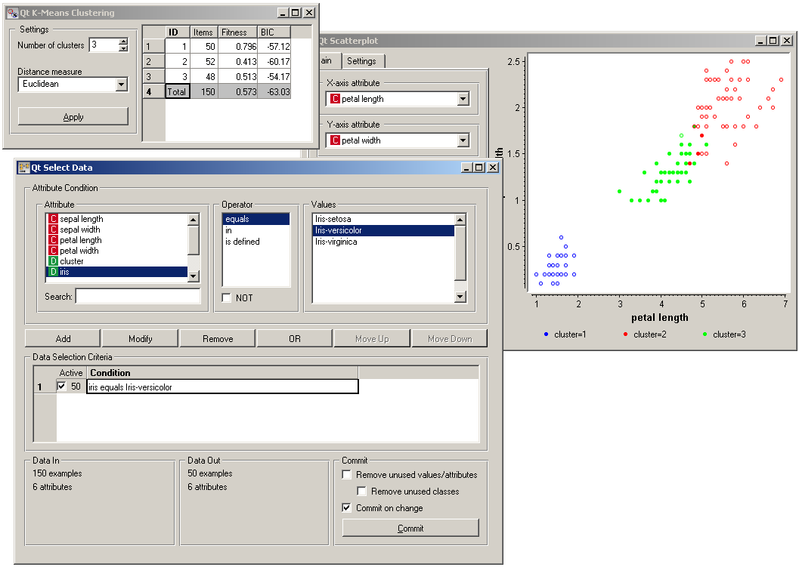
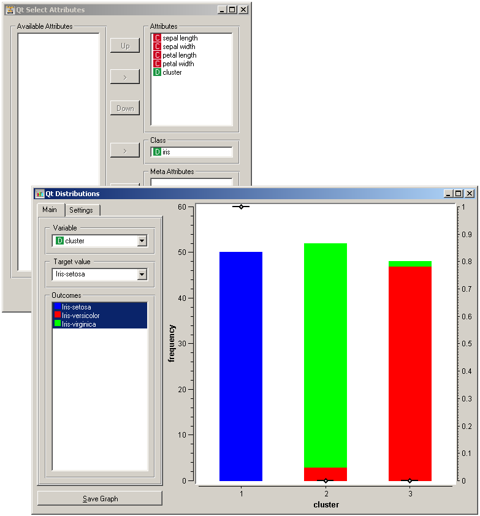

This is documentation for Orange 2.7. For the latest documentation, see Orange 3.
K-Means Clustering¶
Groups the examples using the K-Means clustering algorithm.
Signals¶
- Inputs:
- Examples
A list of examples
- Outputs:
- Examples
A list of examples with the cluster index as the class attribute
Description¶
The widget applies the K-means clustering algorithm to the data from the input and outputs a new data set in which the cluster index is used for the class attribute. The original class attribute, if it existed, is moved to meta attributes. The basic information on the clustering results is also shown in the widget.
Examples¶
We are going to explore the widget with the following schema.
The beginning is nothing special: we load the iris data, divide it into three clusters, show it in a table, where we can observe which example went into which cluster. The interesting part are the Scatter plot and Select data.
Since K-means added the cluster index as the class attribute, the scatter plot will color the points according to the clusters they are in. Indeed, what we get looks like this.
The thing we might be really interested in is how well the clusters induced by the (unsupervised) clustering algorithm match the actual classes appearing in the data. We thus take the Select data widget in which we can select individual classes and get the corresponding points in the scatter plot marked. The match is perfect setosa, and pretty good for the other two classes.
You may have noticed that we left the Remove unused values/attributes and Remove unused classes in Select Data unchecked. This is important: if the widget modifies the attributes, it outputs a list of modified examples and the scatter plot cannot compare them to the original examples.
Another, perhaps simpler way to test the match between clusters and the original classes is to use the widget Distributions. The only (minor) problem here is that this widget only visualizes the normal attributes and not the meta attributes. We solve this by using Select Attributes with which we move the original class to normal attributes.
The match is perfect for setosa: all instances of setosa are in the first cluster (blue). 47 versicolors are in the third cluster (green), while three ended up in the second. For virginicae, 49 are in the second cluster and one in the third.
To observe the possibly more interesting reverse relation, we need to rearrange the attributes in the Select Attributes: we reinstate the original class Iris as the class and put the cluster index among the attributes.
The first cluster is exclusively setosae, the second has mostly virginicae and the third has mostly versicolors.